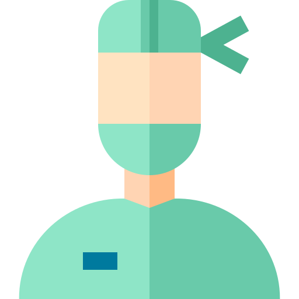

Hospital FMT/2023
 Descubra uma nova forma de salvar vidas no [Nome do Hospital]! Somos um hospital especializado em doação de órgãos e sangue, comprometidos em transformar generosidade em esperança. Ao escolher o [Nome do Hospital], você está se associando a uma instituição dedicada a promover a vida e fazer a diferença nas comunidades que atendemos.
Descubra uma nova forma de salvar vidas no [Nome do Hospital]! Somos um hospital especializado em doação de órgãos e sangue, comprometidos em transformar generosidade em esperança. Ao escolher o [Nome do Hospital], você está se associando a uma instituição dedicada a promover a vida e fazer a diferença nas comunidades que atendemos.
Doa Vida, Doe Amor:Em nosso hospital, a doação de órgãos e sangue é mais do que um ato, é uma expressão de amor e compaixão. Cada doação faz uma diferença significativa na vida de quem precisa, proporcionando uma nova chance e renovando esperanças.
Especialistas em Cuidados Humanizados:Nossa equipe de profissionais altamente qualificados não apenas realiza procedimentos médicos, mas também oferece apoio emocional, compreensão e atenção personalizada a cada doador. No [Nome do Hospital], você é mais do que um doador; é uma parte vital da nossa missão de curar e salvar vidas.
Inovação e Tecnologia a Serviço da Vida:Estamos comprometidos com a mais avançada tecnologia médica para garantir procedimentos seguros e eficazes. No [Nome do Hospital], a inovação se alia à paixão pela vida, proporcionando um ambiente propício para doações que fazem a diferença.
 Programas de Sensibilização:Acreditamos na importância da educação e sensibilização. Promovemos programas comunitários para aumentar a conscientização sobre a doação de órgãos e sangue, capacitando as pessoas a se tornarem agentes de mudança na sociedade.
Programas de Sensibilização:Acreditamos na importância da educação e sensibilização. Promovemos programas comunitários para aumentar a conscientização sobre a doação de órgãos e sangue, capacitando as pessoas a se tornarem agentes de mudança na sociedade.
Ao escolher o [Nome do Hospital], você está escolhendo fazer parte de algo maior, algo que transcende o ordinário. Junte-se a nós e faça parte dessa jornada inspiradora de doação e solidariedade. Venha doar vida, venha doar amor no [Nome do Hospital] - Onde a esperança ganha vida!